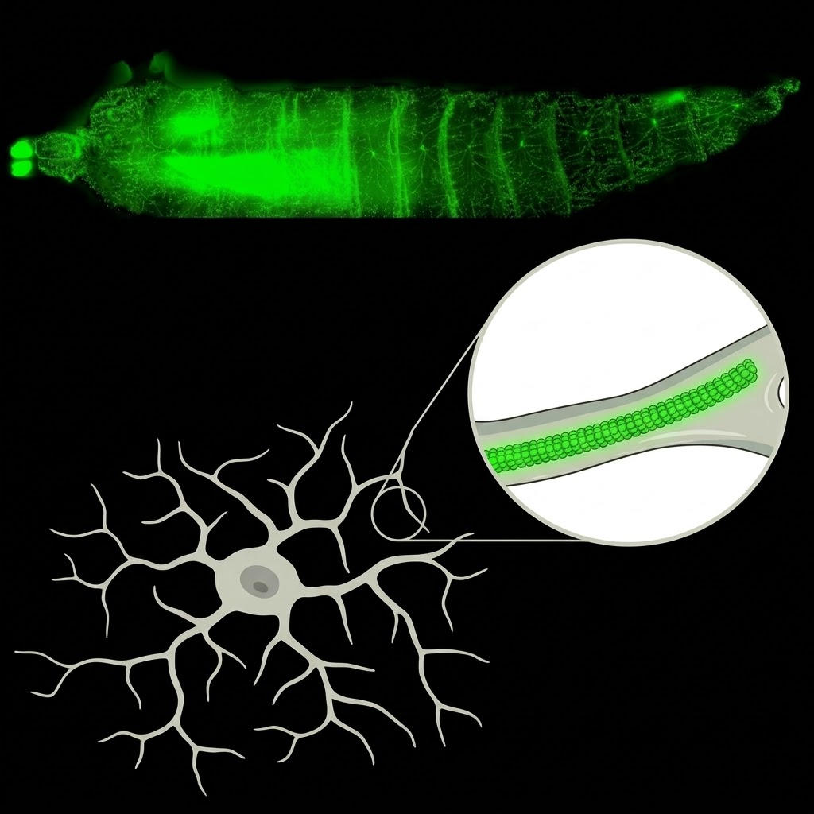
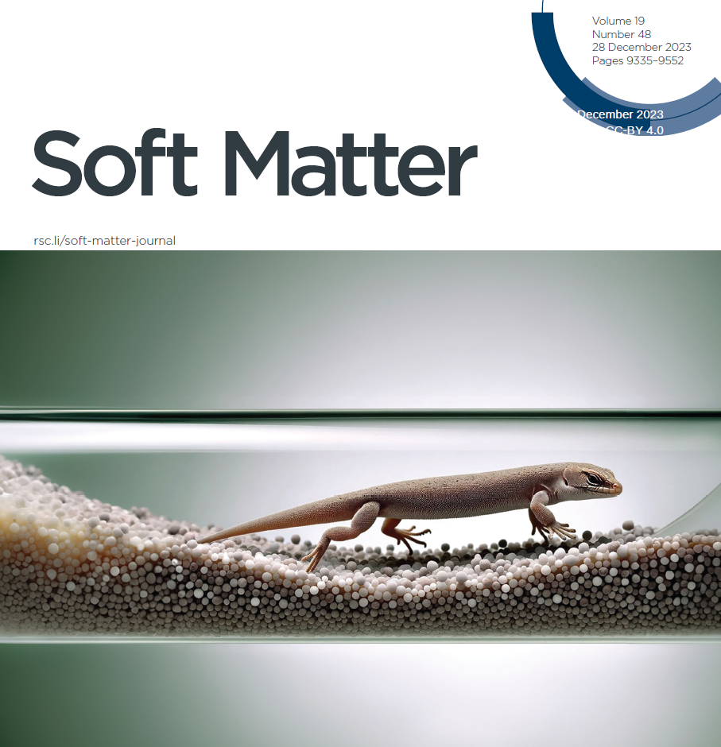
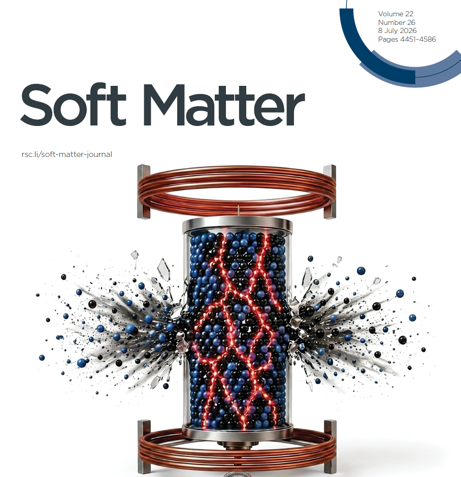
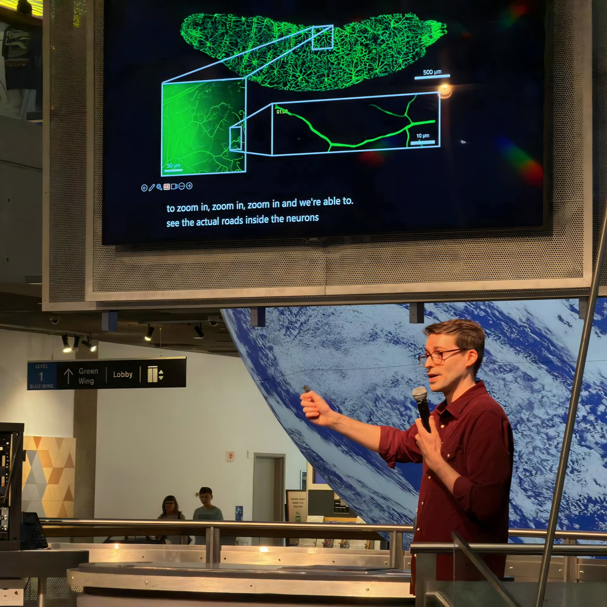
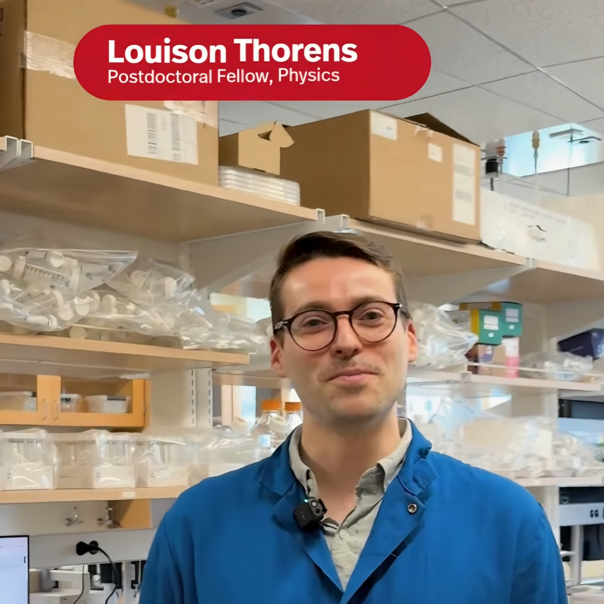
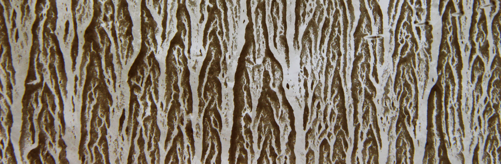

Louison Thorens
Postdoctoral fellow,
Liao Lab, Department of Physics and Institute for
Mechanobiology, Northeastern University
I am an experimental soft matter physicist and biophysicist, resolving the dynamics of individual elements to describe emerging macroscale mechanisms.
Cytoskeletal mechanics · neuronal branching · in vivo imaging · complex fluids · microfluidics · granular media · flow in porous media · simulation · modelling
Work

Mechanobiology · Northeastern University
Cell geometry shapes the cytoskeleton
Using live imaging, deep-learning analysis and physical modelling in Drosophila sensory neurons, we showed that microtubule dynamics is constrained by the dendrite itself, with filament length and density following local branch geometry. On short timescales, the cell shapes the cytoskeleton.

Complex fluids · Tufts University
Single-molecule conformation in viscoelastic flow
Polymers in flow unravel from coils, and identical chains follow strikingly different paths through that transition. Tracking individual DNA molecules in microfluidic viscoelastic flows, we find that a polymer's conformation depends on the deformation it has accumulated along its path, not only on the flow it currently occupies. Relaxation is anisotropic: chains unfold slowly along their length but relax much faster across it.

Porous media flow · PoreLab, University of Oslo
Capillary bulldozing during slow drainage
When a liquid–air interface recedes through an immersed granular bed, it reorganises the grains ahead of it, producing dunes and plugs. We characterised this instability and identified the competition between inter-grain friction and surface tension that sets its onset.

Granular matter · ENS de Lyon & PoreLab
Magnetic Janssen effect
Grains in a container do not behave like a liquid: wall friction diverts the weight sideways and the apparent mass saturates. We showed that this redistribution can be controlled from outside, using ferromagnetic grains in an applied magnetic field to generate a radial wall force whose magnitude and sign are set by the field.
Publications
- Dendritic morphology constrains microtubule dynamics and organization In revision · PNAS bioRxiv (2026)
- Lagrangian dynamics unveil polymer conformation in viscoelastic flows Submitted arXiv:2609.04538 (2026)
- Lagrangian evaluation of polymeric stress in viscoelastic fluids Preprint arXiv:2607.01380 (2026)
- Hybrid magnetic Janssen effect arising from percolating ferromagnetic grain networks Soft Matter 22, 4463–4469 (2026)
- Type I interferon primes the alveolar epithelium to receive reparative signals from tissue-resident macrophages Preprint bioRxiv (2026)
- Macrophage-derived oncostatin M repairs the lung epithelial barrier during inflammatory damage Science 389, 169–175 (2025)
- Capillary washboarding during slow drainage of a frictional fluid Soft Matter 19, 9369–9378 (2023)
- Magnetic Janssen effect Nature Communications 12, 2486 (2021)
- Discharge of a 2D magnetic silo EPJ Web of Conferences 249, 03017 (2021)
- Taming the Janssen effect EPJ Web of Conferences 249, 08004 (2021)
- Unstable drainage of frictional fluids and magnetic control of the mechanical behaviour of confined granular media PhD thesis Université de Lyon & Universitetet i Oslo (2021)
* These authors contributed equally.
Outreach

Museum of Science, Boston
Public talk on the role and organization of microtubules in living neurons.

Research video
Northeastern produced a short film on our work in the Liao Lab. Watch it →

Press · La Recherche
Coverage of our work on branched flow patterns. Le mystère des écoulements ramifiés →